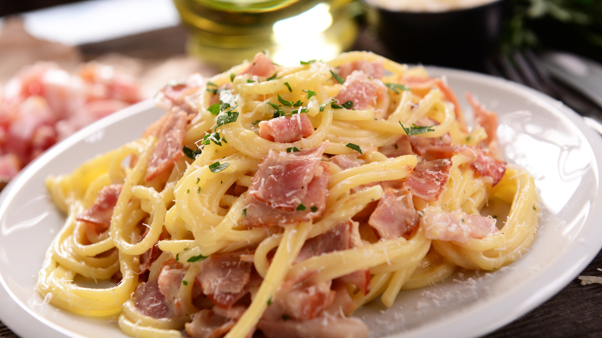

BiteCraft
Crafting flavor, one bite at a time
Navigation
Classic Spaghetti Carbonara
Creamy, rich, and comforting, this Classic Spaghetti Carbonara is a timeless Italian dish that’s perfect for any occasion. Made with simple ingredients like eggs, cheese, pancetta, and pepper, this dish comes together in under 30 minutes for a meal that feels both indulgent and effortless. No cream needed—just authentic, silky-smooth sauce coating every strand of pasta.

Ingredients
- 8 oz (225g) spaghetti
- 4 oz (115g) pancetta or guanciale, diced
- 2 large eggs
- 1 cup (100g) grated Pecorino Romano cheese
- 1/2 cup (50g) grated Parmesan cheese
- 2 cloves garlic, peeled and slightly crushed (optional)
- Freshly ground black pepper, to taste
- Salt
Instructions
- Cook the Pasta - Bring a large pot of salted water to a boil. Add the spaghetti and cook according to the package instructions until al dente. Reserve 1 cup of pasta water, then drain the pasta.
- Prepare the Sauce - While the pasta cooks, whisk together the eggs, Pecorino Romano, and Parmesan in a bowl until well combined. Set aside.
- Cook the Pancetta - In a large skillet over medium heat, cook the diced pancetta until crispy, about 4-5 minutes. If using garlic, add it to the pan halfway through to infuse some flavor, then remove and discard. Turn off the heat.
- Combine and Toss - Add the hot, drained pasta to the skillet with the pancetta. Toss well to coat the pasta in the rendered fat. Quickly pour in the egg and cheese mixture, stirring vigorously. Add a splash of reserved pasta water as needed to create a silky, creamy sauce that clings to the pasta. Be careful not to scramble the eggs.
- Season and Serve - Season generously with freshly ground black pepper and more Pecorino Romano if desired. Serve immediately with extra cheese on the side.
BiteCraft Bits
- To avoid scrambling the eggs, remove the skillet from heat before adding the egg mixture, and keep the pasta hot but not overly steaming.
- Guanciale is the traditional meat used, but pancetta or even thick-cut bacon works well too.
- Pecorino Romano adds a sharp, salty flavor, while Parmesan brings a subtle nuttiness. Feel free to adjust the ratio to your liking.
Nutritional Information
- Serving size: 1 bowl
- Calories: 450
- Protein 18g
- Carbohydrates 48g
- Fat 20g
Reviews
“This was the best Carbonara I’ve ever made! So easy and delicious. My family loved it!” - Sarah M.
“Perfectly creamy without the cream! A new favorite.” - John P.